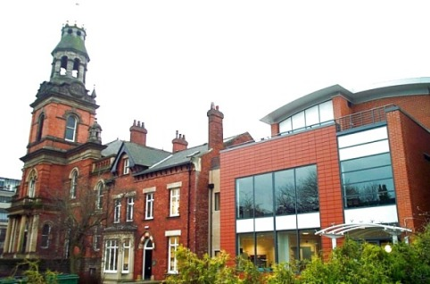

Locations:
Parkinson Building:
The best landmark for finding the University is the Parkinson Building (map; see photo). The Parkinson Building is the large white clock tower that can be seen from most of the city. It is also by the main entrance into the Uni.
School of Music, and Clothworkers Centenary Concert Hall:
Registration, and the conference will be in the School of Music, and the adjacent Clothworkers Centenary Concert Hall. This is a distinctive building with a golden domed tower, near the Parkinson. Facing the Parkinson, find the road to the left with the drop-down barriers. Follow this down and Music is on the corner just before the road turns left. Entrance is through the modern extension to the building (map; see photo).
The Great Hall:
The reception on Monday night will be in the great hall. This is behind the Parkinson building (map; see photo). Facing the Parkinson, go down the left hand side and under the building joined to it. Walk down this pedestrianised road, which has a lawn to the right of it, and the Great Hall is at the end of the lawn.
Doubletree Hotel:
The conference dinner will be in Doubletree Hotel, in town (map). Attendees are welcome to meet there, though we will be walking down from the University in the evening (transport available if required). Details will be distributed at the conference.
 Map © OpenStreetMap contributors
Map © OpenStreetMap contributors

The Parkinson Building

School of Music

The Great Hall
The Doubletree Hotel